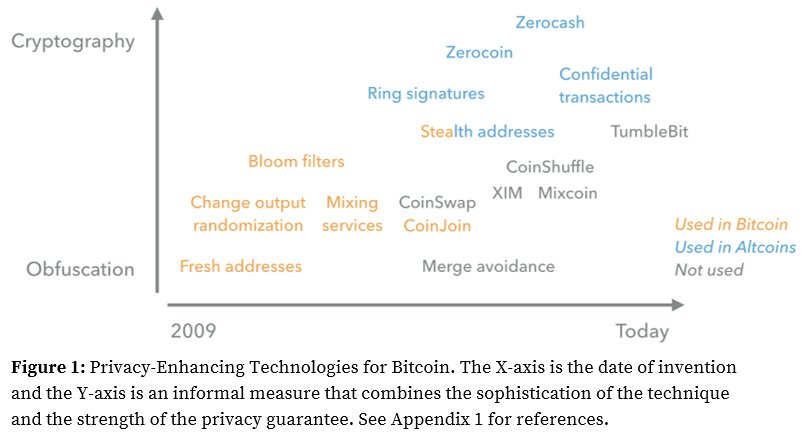

If you spend enough time around Bitcoin privacy, the same argument shows up again and again: should users rely on mixers, should they stay inside CoinJoin tooling, or should they route through Monero when they need a stronger break in transaction visibility. This page exists because that argument is usually framed too simply. In real use, privacy is rarely about one perfect tool. It is about what still works when exchanges tighten policy, when liquidity dries up, and when users have to move funds under time pressure without leaving a trail they cannot later explain.
Monero is important in that conversation because it starts from a different design assumption than Bitcoin. Bitcoin is transparent by default, so privacy is mostly operational discipline layered on top. Monero is private by default, so observers have less chain data to work with from the beginning. That does not make Monero invincible and it definitely does not excuse bad process, but it does raise the baseline in a way that materially changes the surveillance game for everyday users, merchants, and investigators alike.
The practical question is not whether Monero is "good" or "bad." The practical question is when the extra swap friction and route risk are worth it versus staying entirely in BTC rails. If your threat model is simple block explorer visibility, disciplined Bitcoin workflows may be enough. If your threat model includes long-term clustering, exchange heuristics, or commercial chain surveillance, Monero often becomes one of the few realistic ways to reduce deterministic linkage at the ledger level.
The operational mistake we see most often is treating Monero like a magic button instead of one layer in a broader playbook. Private rails can remove large classes of on-chain leakage, but they cannot fix rushed timing, wallet reuse, sloppy bridge selection, or weak recordkeeping around source of funds. If the surrounding process is weak, even a strong privacy protocol gets pulled down by human behavior.

Why Monero Matters for Bitcoin Users
Bitcoin privacy tools are useful, but they are still built on top of a ledger where every transaction graph can be replayed indefinitely. That architecture is excellent for public verification and final settlement, but it is consistently difficult for users who want routine financial privacy without running specialist workflows forever. Monero narrows that gap by making sender ambiguity, receiver protection, and amount confidentiality part of normal transaction behavior rather than optional add-ons that only advanced users maintain correctly for years.
In practice, many experienced operators use Monero as a privacy checkpoint between two Bitcoin phases: funds leave BTC, move across XMR infrastructure for a period, then return to BTC through a different route with cleaner separation. You see this pattern across our pages on atomic swaps, private exchanges, and layered privacy strategy because it remains one of the few approaches that can adapt when policy conditions and exchange rules change quickly.
That said, context matters. If your risk is mostly casual scraping and basic explorer queries, disciplined CoinJoin plus wallet hygiene may cover enough ground. If your risk includes institutional analytics, commercial tracing tools, and account-level monitoring at large venues, Monero becomes much harder to ignore because it cuts off the easiest attack path: deterministic replay of a transparent transaction graph.
Ring Signatures and Decoy Inputs
The CryptoNote whitepaper introduced ring signatures, where a real spend is validated inside a group of plausible decoys instead of being presented as a single, obvious chain event. That sounds abstract at first, but the surveillance impact is concrete: analysts lose the clean one-to-one spend narrative that makes transparent-chain reconstruction so straightforward.
On Bitcoin, tracing often begins with explicit transaction paths and only later adds assumptions where the graph gets noisy. On Monero, uncertainty appears at the start and usually persists unless investigators can import external intelligence such as exchange logs, endpoint compromise, seized infrastructure, or network-level telemetry. In other words, the chain itself gives away less, so adversaries have to work harder somewhere else.
Stealth Addresses, Confidential Amounts, and Network Layer Privacy
Monero's privacy model is not one trick; it is a stack. One-time destination addresses reduce recipient reuse, confidential amounts remove easy value-based heuristics, and network relay hardening such as Dandelion++ raises the cost of simplistic broadcast-source mapping. No single component solves everything, but together they deny outsiders the shortcuts that work so well on transparent ledgers.
A useful nuance for compliance and accounting teams is that Monero still supports controlled disclosure through view keys. That means privacy is not the same as "no audit possible." Owners can selectively reveal transaction information when they must prove funds history, settle disputes, or answer legitimate review requests, while avoiding blanket public visibility for every unrelated observer.
Why Chain Surveillance Struggles on Monero
Most public claims about routine Monero tracing still arrive as marketing language or private briefings, not reproducible methods that independent researchers can verify. Investigators can and do build real cases using exchange records, endpoint forensics, and traditional intelligence work, but that is a different claim than saying the Monero ledger alone provides deterministic attribution at Bitcoin-like quality.
That distinction matters for operators. If an analytics vendor says it can reliably deanonymize Monero flows at scale, the correct response is to ask for transparent methodology, external validation, and measurable error rates. Without that evidence, the safer assumption is that most practical deanonymization still depends on off-chain mistakes by users or service providers, not a straightforward chain-level break.
Monero vs Mixers vs CoinJoin
Monero, mixers, and CoinJoin are often debated as if users must pick a single winner, but that framing usually produces bad decisions. These tools solve different problems under different constraints. Monero offers stronger default ledger privacy, but it depends on healthy bridges and liquidity. Custodial mixers are fast and convenient for BTC-native routing, but they add custody and infrastructure trust. CoinJoin keeps self-custody in Bitcoin, but it demands stricter wallet discipline than most users expect.
Experienced operators usually layer them instead of treating them as mutually exclusive. A common pattern is CoinJoin for ongoing UTXO hygiene, Monero when a harder graph break is needed, and mixers when low-latency BTC output is required for a specific use case. That layered approach is less ideological and more resilient, especially when one route fails unexpectedly.
If you want a practical default: start with self-custodial methods, escalate to Monero when transparent-chain exposure is too high for your threat model, and treat custodial mixers as tactical infrastructure rather than permanent dependence. For deeper BTC-side context, review Why We Need Mixers and Bitcoin Mixer Guide.
How Mixers Still Fit
Monero does not make Bitcoin mixers obsolete, mainly because the broader crypto economy still settles in BTC for many purchases, exchange flows, and treasury operations. Users who need fast BTC output often prioritize speed and execution certainty over maximum privacy depth, and that keeps mixers relevant even after repeated enforcement shocks.
The stronger model is to treat mixers and Monero as complementary rails. Mixers can provide quick routing when timing matters; Monero can provide deeper privacy when users can tolerate extra swap steps and spread. For current market context, see LocalMonero / Agoradesk Exit and Private Exchanges, both of which show how quickly route availability can change after major shutdowns.
Teams usually get hurt when they assume these tools are interchangeable. They are not. Mixers optimize convenience and latency; Monero optimizes default transaction confidentiality. Choosing between them should be an explicit tradeoff tied to threat model, timing, and route health.
BTC↔XMR Swap Routes and Liquidity Risk
A Monero strategy is only as durable as its entry and exit rails. In calm markets, users can rotate through atomic swaps, private exchangers, and OTC counterparties. In stressed markets, those same rails can narrow quickly, spreads widen, and timing patterns become easier to profile because everyone rushes to the same few options at once.
Delisting pressure is not theoretical policy noise. The patterns documented in Privacy Coin Delistings and the account-level friction covered in Exchange Freezes show why single-bridge dependence is fragile. If one route disappears, users often discover too late that their backup path is expensive, unreliable, or already crowded with identical traffic.
The operational rule is simple: map backup routes before you need them. When a primary rail fails during a high-pressure week, rushed replacements usually cost more and leak more metadata at the same time.
Failure Modes You Must Plan For
The most common failures are routine, not exotic. Users enter and exit too quickly, reuse wallet contexts between "clean" and exchange activity, or assume on-chain privacy can compensate for full KYC identity exposure at centralized venues. Another recurring failure is route collapse: one major bridge disappears and a large group of users pile into identical alternatives, creating fresh timing signatures and liquidity bottlenecks.
When we review failed workflows, the root cause is usually process fatigue rather than technical ignorance. People rush, skip separation steps, and improvise under pressure. Privacy operations need checklists for the same reason security teams use runbooks: consistent habits beat improvisation when conditions turn hostile.
Operational Checklist
A durable baseline is straightforward and non-negotiable: isolate wallets by stage, avoid synchronized in-and-out timing, maintain lawful source-of-funds records for escalation events, and keep at least two independent liquidity routes live before you need them. None of this sounds glamorous, but this is where real-world privacy either survives or collapses when scrutiny increases.
Strong teams rehearse this flow during quiet periods so decisions are boring when conditions are noisy. If a process only works when every route is healthy and fees are low, it is not a process yet. It is a best-case scenario waiting for the wrong week.
Monero Privacy FAQ
Is Monero more private than a Bitcoin mixer?
At protocol level, Monero provides default privacy for sender, receiver, and amount metadata. Mixers can still be useful, but they do not make Bitcoin itself private by default.
Can BTC↔XMR swaps be traced?
Swap events can still leak operational metadata such as timing and counterparties. Strong wallet separation and route diversity reduce, but do not eliminate, this risk.
Do Monero delistings kill this strategy?
No, but they increase friction and cost. Users need backup routes through private exchanges, P2P markets, or trust-minimized swaps.
Should I use Monero instead of mixers?
Usually it is a layered decision. Monero, mixers, and CoinJoin each address different threat models; robust privacy setups combine them based on context.

Author
NotATether
Bitcoin privacy researcher and maintainer of BitMixList. Focused on mixer history, enforcement timelines, and practical privacy workflows for users operating in high-friction jurisdictions.